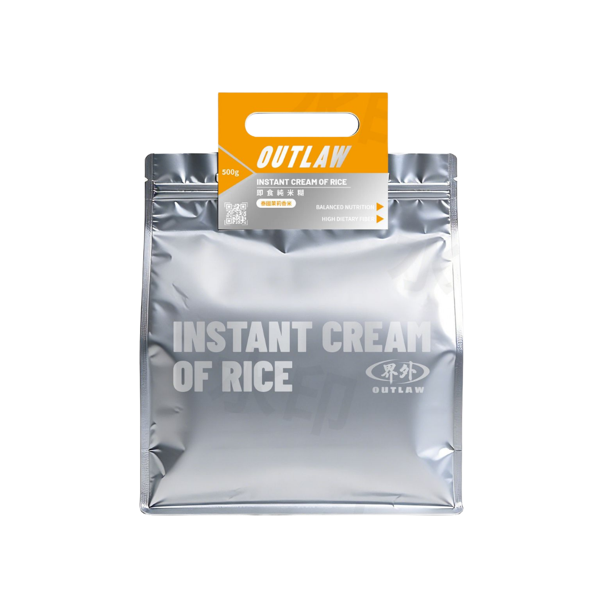

即食純米糊 · 經典
Best Seller原始米香，純粹口感。最適合搭配蛋白粉或堅果醬。

界外 OUTLAW
001 — 認識米糊
Cream of Rice（即食米糊）是將優質白米精細研磨而成的即食碳水化合物。在歐美健身界被譽為「完美碳水」，是許多職業運動員和健體選手的首選訓練餐。
界外選用 100% 泰國清萊府的茉莉香米，經低溫精磨工藝處理，保留米粒天然的香氣和營養。只需加入熱水攪拌，60 秒即可完成一份高質量的訓練前後碳水補給。
無麩質、無添加糖、零脂肪 — 成分表上只有一行：100% 泰國茉莉香米粉。簡單，是我們最高的追求。

002 — Products
三種口味，同一份堅持。採用泰國清萊府高地種植的茉莉香米，
經低溫精磨工藝製成。保留米粒天然營養，口感細滑如絲。
Nutrition Facts
每份 50g 的營養資料，讓你精確掌控每日攝取。
成分：100% 泰國茉莉香米粉。無添加糖、無防腐劑、無人工色素。
003 — 為什麼選擇米糊
不是所有碳水都一樣。米糊在消化速度、營養密度和便利性上，都有明顯優勢。


004 — Ritual
三步完成你的訓練餐。簡單，是最高的追求。
取 50-100g 米糊粉放入杯中。按照你的碳水需求調整份量。
加入 150-200ml 熱水，攪拌至順滑。冷水亦可，口感略有不同。
加入蛋白粉、花生醬、蜂蜜、莓果 — 打造你專屬的營養組合。

我們的米源自泰國北部清萊府高地。那裡海拔 600 米以上的山谷，氣候涼爽、水源純淨、土壤肥沃，賦予茉莉香米獨特的花香與甘甜。每一粒米，都經過嚴格篩選與品質把關。
005 — Philosophy
健身人的理想碳水，不是偶然。每一個優點，都來自米糊本身的天然特性。
米糊的精細研磨結構令其消化速度遠超一般碳水。訓練前後進食都不會造成腸胃負擔，讓能量更快到達肌肉。
成分表只有一行：泰國茉莉香米粉。無添加糖、無麩質、無防腐劑、無人工色素。你攝取的每一克，都是真正的營養。
原味米糊是一張白紙。加蛋白粉變成增肌餐、加花生醬增添口感、加莓果補充維他命 — 千變萬化，完全由你定義。
粉狀形態讓你可以精確量取所需份量。無論是減脂期的低碳水策略，還是增肌期的高碳水需求，都能靈活調整。
保留天然纖維，幫助腸道健康同時增加飽腹感。比一般精製碳水有更豐富的微量營養素。
加水攪拌即可食用。無需煮食、無需等待。健身包裡放一包，隨時隨地補充能量。

006 — Brand Story
界外 OUTLAW — 不是叛逆，而是拒絕將就。
我們的創辦人是健身愛好者，經歷過無數次在備賽期間為碳水攝取煩惱的日子。白飯要煮、番薯要蒸、燕麥令腸胃不適 — 為什麼一份簡單的碳水補給要這麼麻煩？
界外的誕生，源於一個簡單的信念：訓練應該專注在訓練本身，而不是為食物準備浪費時間。我們走遍泰國北部的稻米產區，最終在清萊府的高地找到了最理想的茉莉香米。
我們不做大而全的營養品牌。只專注一件事：把米糊做到極致。從原料篩選到研磨工藝，從包裝設計到你的杯中。每個環節都經過反覆推敲，因為我們相信，真正好的產品，不需要解釋太多。
界外的名字，代表超越既有的框架。不論是訓練的瓶頸，還是對食物的既定印象。
007 — FAQ
如有其他疑問，歡迎透過 WhatsApp 或電郵聯絡我們。
蛋白粉主要提供蛋白質，而米糊主要提供碳水化合物。兩者功能不同，但可以完美搭配 — 將米糊加入蛋白粉中，就是一份營養均衡的訓練餐。
訓練前 30-60 分鐘或訓練後立即食用最為理想。米糊消化速度快，能迅速為身體提供能量。也可以作為早餐或正餐的碳水來源。
可以。我們的米糊是 100% 純米製成，完全不含麩質（Gluten Free）。適合對麩質敏感或有乳糜瀉的人士。
每包 500g。以每次 50g 計算，約可食用 10 次；以每次 100g 計算，約可食用 5 次。視乎個人碳水需求而定。
可以。冷水沖調口感會較為稀薄，熱水沖調則更為濃稠順滑。兩種方式都不影響營養成分，可按個人喜好選擇。
請存放於陰涼乾燥處，避免陽光直射。開封後建議以密封夾封好。保質期為生產日起 12 個月，詳見包裝上的日期標示。